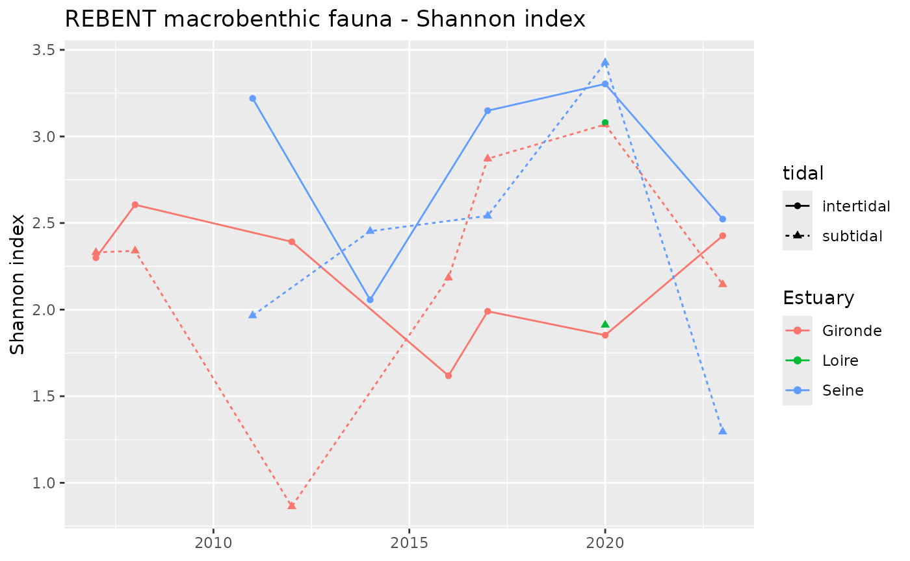

knitr::opts_chunk$set(echo = FALSE)
library(esteem.overview)
library(tidyverse, quietly = TRUE)
#> ── Attaching core tidyverse packages ──────────────────────── tidyverse 2.0.0 ──
#> ✔ dplyr 1.1.4 ✔ readr 2.1.5
#> ✔ forcats 1.0.0 ✔ stringr 1.5.1
#> ✔ ggplot2 3.5.2 ✔ tibble 3.3.0
#> ✔ lubridate 1.9.4 ✔ tidyr 1.3.1
#> ✔ purrr 1.1.0
#> ── Conflicts ────────────────────────────────────────── tidyverse_conflicts() ──
#> ✖ dplyr::filter() masks stats::filter()
#> ✖ dplyr::lag() masks stats::lag()
#> ℹ Use the conflicted package (<http://conflicted.r-lib.org/>) to force all conflicts to become errors
library(writexl)
# Maps
library(sf)
#> Linking to GEOS 3.12.1, GDAL 3.8.4, PROJ 9.4.0; sf_use_s2() is TRUE
# Get taxonomy api
library(jsonlite) # install.packages("jsonlite", repos="http://cran.r-project.org")
#>
#> Attaching package: 'jsonlite'
#>
#> The following object is masked from 'package:purrr':
#>
#> flatten
library(httr) # install.packages("httr")
# Get benthos indicator AMBI
library(benthos)
`%!in%` = Negate(`%in%`)REBENT Indicators
Taxonomic composition
Phylum level
ni = Number of individuals for each phylum per estuary, tidal zone and year
N = Total number of individuals per estuary, tidal zone and year
pi = Percentage abundance for each phylum per estuary, tidal zone and year

Species level
#> # A tibble: 13 × 7
#> ESTUARY tidal phylum class order species abundance_prop
#> <chr> <chr> <chr> <chr> <chr> <chr> <dbl>
#> 1 Gironde intertidal Arthropoda Crustacea Multicrustac… Coroph… 11.4
#> 2 Gironde intertidal Mollusca Bivalvia Autobranchia Scrobi… 11.3
#> 3 Gironde intertidal Mollusca Gastropoda Caenogastrop… Pering… 48.1
#> 4 Gironde subtidal Annelida Polychaeta Sedentaria Hetero… 41.6
#> 5 Gironde subtidal Arthropoda Crustacea Multicrustac… Mesopo… 20.8
#> 6 Loire intertidal Annelida Polychaeta Sedentaria Hetero… 36.2
#> 7 Loire intertidal Mollusca Bivalvia Autobranchia Scrobi… 16.2
#> 8 Loire subtidal Annelida Polychaeta Sedentaria Boccar… 69.7
#> 9 Seine intertidal Mollusca Bivalvia Autobranchia Cerast… 24.9
#> 10 Seine intertidal Mollusca Bivalvia Autobranchia Macoma… 20.9
#> 11 Seine subtidal Annelida Polychaeta Errantia Microp… 28.3
#> 12 Seine subtidal Arthropoda Crustacea Multicrustac… Hausto… 18.5
#> 13 Seine subtidal Arthropoda Crustacea Multicrustac… Bathyp… 13.4#> # A tibble: 28 × 7
#> ESTUARY tidal phylum class order species abundance_prop
#> <chr> <chr> <chr> <chr> <chr> <chr> <dbl>
#> 1 Gironde intertidal Annelida Polychaeta Sedentaria Hetero… 7.28
#> 2 Gironde intertidal Arthropoda Crustacea Multicrustac… Coroph… 11.4
#> 3 Gironde intertidal Mollusca Bivalvia Autobranchia Scrobi… 11.3
#> 4 Gironde intertidal Mollusca Bivalvia Autobranchia Macoma… 5.90
#> 5 Gironde intertidal Mollusca Gastropoda Caenogastrop… Pering… 48.1
#> 6 Gironde subtidal Annelida Polychaeta Sedentaria Hetero… 41.6
#> 7 Gironde subtidal Arthropoda Crustacea Multicrustac… Mesopo… 20.8
#> 8 Loire intertidal Annelida Polychaeta Sedentaria Hetero… 36.2
#> 9 Loire intertidal Annelida Polychaeta Sedentaria Tharyx 5.61
#> 10 Loire intertidal Arthropoda Crustacea Multicrustac… Amphib… 8.36
#> # ℹ 18 more rowsSpecies richness (S)
#> `summarise()` has grouped output by 'ESTUARY', 'YEAR', 'tidal'. You can
#> override using the `.groups` argument.Shannon index (H’)
ni = Number of individuals for each species per estuary, tidal zone and year
N = Total number of individuals per estuary, tidal zone and year
pi = Percentage abundance for each species per estuary, tidal zone and year
H’ = Shannon-index

Abundance/Density
Number of individual per m2 at a given LIEU_MNEMONIQUE & DATE
One line per species: nb of individuals
#> `summarise()` has grouped output by 'ESTUARY', 'LIEU_MNEMONIQUE', 'DATE',
#> 'sampler_type', 'sampler_surface', 'tidal', 'nb_samples_lieu_mnemonique_date'.
#> You can override using the `.groups` argument.
#> # A tibble: 930 × 10
#> ESTUARY LIEU_MNEMONIQUE DATE sampler_type sampler_surface
#> <chr> <chr> <dttm> <chr> <dbl>
#> 1 Gironde 085-P-066 2020-09-03 00:00:00 Carottier PVC di… 0.028
#> 2 Gironde 085-P-066 2020-09-03 00:00:00 Carottier PVC di… 0.028
#> 3 Gironde 085-P-066 2020-09-03 00:00:00 Carottier PVC di… 0.028
#> 4 Gironde 085-P-066 2020-09-03 00:00:00 Carottier PVC di… 0.028
#> 5 Gironde 085-P-066 2020-09-03 00:00:00 Carottier PVC di… 0.028
#> 6 Gironde 085-P-066 2020-09-03 00:00:00 Carottier PVC di… 0.028
#> 7 Gironde 085-P-066 2023-09-13 00:00:00 Carottier PVC di… 0.028
#> 8 Gironde 085-P-066 2023-09-13 00:00:00 Carottier PVC di… 0.028
#> 9 Gironde 085-P-066 2023-09-13 00:00:00 Carottier PVC di… 0.028
#> 10 Gironde 085-P-066 2023-09-13 00:00:00 Carottier PVC di… 0.028
#> # ℹ 920 more rows
#> # ℹ 5 more variables: tidal <chr>, nb_samples_lieu_mnemonique_date <int>,
#> # species <chr>, nb_ind_species_lieu_mnemonique_date <dbl>,
#> # nb_ind_species_per_m2 <dbl>Yearly mean of individuals per surface
#> `summarise()` has grouped output by 'ESTUARY', 'YEAR', 'DATE',
#> 'LIEU_MNEMONIQUE'. You can override using the `.groups` argument.
#> `summarise()` has grouped output by 'ESTUARY', 'YEAR'. You can override using
#> the `.groups` argument.#> Warning: Width not defined
#> ℹ Set with `position_dodge(width = ...)`
#> Width not defined
#> ℹ Set with `position_dodge(width = ...)`AZTI Marine Biotic Index (AMBI)
Ecological groups of sensitivity to anthropic disturbance
#> Joining with `by = join_by(TAXON, GROUP)`
#> `summarise()` has grouped output by 'ESTUARY'. You can override using the
#> `.groups` argument.
#> # A tibble: 45 × 1
#> species
#> <chr>
#> 1 Amphibalanus improvisus
#> 2 Amphipoda
#> 3 Annelida
#> 4 Apohyale prevostii
#> 5 Assiminea grayana
#> 6 Balanus crenatus
#> 7 Bivalvia
#> 8 Brachyura
#> 9 Caridea
#> 10 Chirona
#> # ℹ 35 more rows#> `summarise()` has grouped output by 'ESTUARY', 'YEAR', 'tidal'. You can
#> override using the `.groups` argument.
#> Warning: There were 6 warnings in `summarise()`.
#> The first warning was:
#> ℹ In argument: `ambi = ambi(taxon = species, count = count)`.
#> ℹ In group 1: `ESTUARY = "Gironde"`, `YEAR = 2007`, `tidal = "intertidal"`.
#> Caused by warning:
#> ! `filter_()` was deprecated in dplyr 0.7.0.
#> ℹ Please use `filter()` instead.
#> ℹ See vignette('programming') for more help
#> ℹ The deprecated feature was likely used in the benthos package.
#> Please report the issue to the authors.
#> ℹ Run `dplyr::last_dplyr_warnings()` to see the 5 remaining warnings.